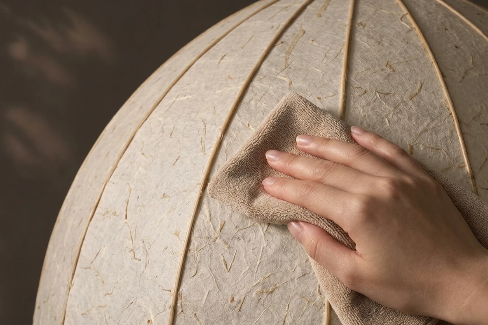
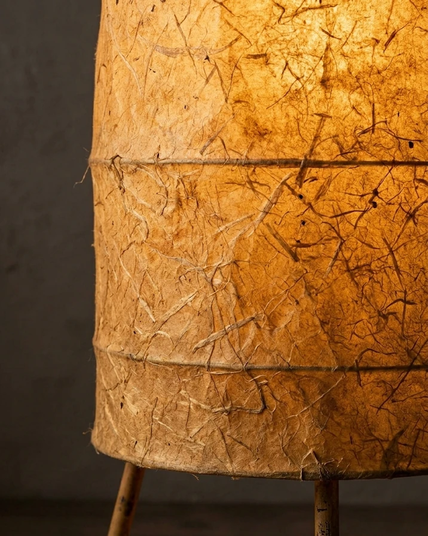

온도와 오래 함께하는 법
- 먼지는 마른 붓이나 부드러운 천으로 가볍게 털어요.
물걸레는 쓰지 않아요. - 습한 곳과 창가의 직사광선은 피해요.
한지가 늘어나거나 더 빨리 바래요. - 한지가 살짝 찢어지면 같은 종이를 작게 잘라 풀로 덧붙여요.
붙인 자국도 그대로 둬요.

함께 낡아 가는 일
새것처럼 지키려 하기보다 함께 낡아 가는 쪽을 택해 보세요. 일 년 뒤 같은 자리에서 보면 색이 달라진 걸 알게 돼요.
바래는 것도 조명의 시간이에요.